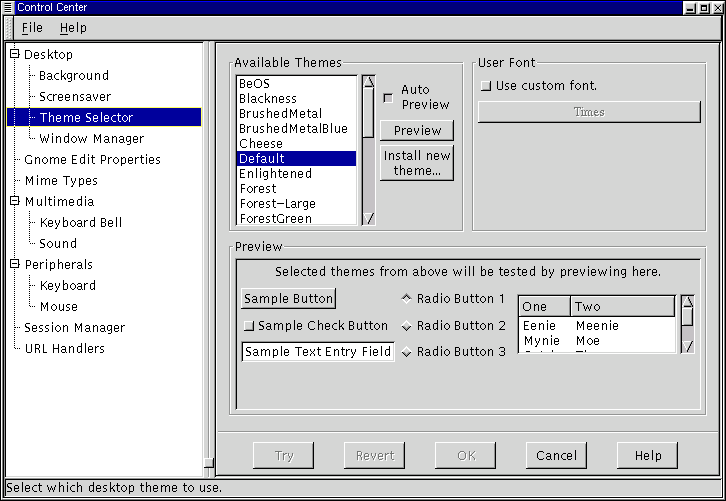

Капплеты настройки рабочего стола
Капплет настройки фона
С помощью этого капплета вы можете выбрать изображение или цвет фона. Если вы выберете цвет, то вам предоставляется выбор между монотонным (однородным) цветом и градиентом, т. е. когда цвет фона плавно меняется между двумя заданными значениями. Для градиента вы должны указать начальный и конечный цвета и направление (по горизонтали или по вертикали).
Если вы решили использовать в качестве фона изображение, то вы должны выбрать файл с изображением. Вы также должны указать, следует ли поместить изображение в центре экрана, замостить экран многими копиями изображения (мозаика), растянуть изображение до размеров экрана или растянуть с сохранением пропорций (при этом, если пропорции изображения не совпадают с пропорциями экрана, то будет покрыта только часть экрана). После того, как вы выбрали фон, нажмите на кнопку Попробовать в низу экрана, для того, чтобы его применить.
Если вы хотите установить фон экрана каким-либо другим способом (например, с помощью явной команды X-серверу), то вам следует отключить этот капплет, выбрав Disable background selection.
Рисунок 9-2. Капплет настройки фона

Капплет хранителя экрана
В этом капплете вы можете изменить настройку хранителя экрана. Он содержит список хранителей экрана, установленных на вашей системе, и демонстрационное окно. Некоторые хранители экрана позволяют пользователю изменить какие-либо параметры (например, число цветов); в этом случае, вы можете это сделать нажав кнопку Свойства. Наконец, этот капплет также позволяет вам изменить настройку, общую для всех хранителей экрана, как описано ниже.
Настройки хранителя экрана - в этой части капплета вы можете изменить задержку, пароль и режим энергосбережения для всех хранителей экрана. Задержка определяет через какое время бездействия клавиатуры и мыши включается хранитель экрана. Для изменения задержки, введите требемое число минут в графе Начинать через ... минут. Если вы выберете режим Require Password, то хранитель экрана будет запрашивать ваш пароль перед тем, как восстановить экран.
Вы также можете включить режим энергосбережения, если это поддерживается вашим монитором. В этом случае монитор будет переходить в режим энергосбережения через время, указанное в графе Выключать экран через ... минут.
Рисунок 9-3. Капплет настройки хранителя экрана

Переключатель тем
В капплете внешнего вида вы также можете выбрать тему GTK. Эти темы определяют внешний вид таких элементов графического интерфейса как кнопки и графы, в которые следует вводить текст в диалогах, "ползунки" и т.п. Выбор тем определяет внешний вид этих элементов во всех приложениях, использующих графический пакет GTK - в частности, во всех GNOME-совместимых приложениях.
Чтобы изменить используемую тему GTK, выберите одну из тем, перечисленных в списке "Темы" в левой части панели. Если вы выбрали режим Авто Просмотр, то вы увидите образец того, как будут выглядеть различные диалоги с выбранной вами темой, в нижней части панели. Если вам понравилась тема, то нажмите кнопку Попробовать, и она будет установлена.
Исходная поставка GNOME содержит несколько тем GTK. Вы также можете найти большое количество тем GTK в Интернете, например, по адресу http://gtk.themes.org. Чтобы добавить одну из этих тем, загрузите на свой компьютер соответствующий файл (он должен быть в формате tar.gz или .tgz) и нажмите кнопку Установить новую тему. Это запустит диалог поиска файлов, в котором вы должны указать путь к этому файлу. После этого нажмите OK и эта тема будет установлена - теперь вы можете выбрать ее в списке "Темы".
Рисунок 9-4. Переключатель тем

Вы также можете изменить шрифт, используемый темой. Для этого включите режим Use custom font и нажмите на кнопку "Шрифт". Это запустит диалог выбора шрифта, в котором вы можете указать имя, размер и другие свойства шрифта.
Капплет диспетчера окон
Поскольку GNOME может быть использован с разными диспетчерами окон, этот капплет позволяет вам выбрать, какой именно диспетчер окон вы хотите использовать. Он не ищет сам, какие именно диспетчеры окон есть на вашей системе - вы должны сказать ему это.
Рисунок 9-5. Капплет диспетчера окон

Этот капплет показывает список диспетчеров окон на вашей системе. Диспетчер окон, используемый в настоящий момент, помечен "Current".
Чтобы добавить к этому списку еще один диспетчер окон, щелкните на кнопку Add. Она запустит окно-диалог добавления диспетчера окон.
Рисунок 9-6. Диалог добавления диспетчера окон

В диалоге добавления диспетчера окон вы можете выбрать имя, под которым этот диспетчер появится в списке, команду запуска и команду для настройки этого диспетчера окон (если таковая имеется).
Если этот диспетчер окон полностью GNOME-совместим, то вы можете выбрать Window manager is session managed. Если вы не уверены, является ли диспетчер окон GNOME-совместимым, проверьте его документацию.
После заполнения всех граф диалога добавления диспетчера окон нажите кнопку OK, и этот диспетчер окон будет добавлен к списку.
Вы можете изменить свойства добавленного вами диспетчера окон, выбрав его в списке и нажав кнопку Edit. Если этот диспетчер снабжен программой настройки, вы можете запустить ее, нажав кнопку Run Configuration Tool for [имя диспетчера окон].
Чтобы удалить диспетчер окон из списка, выделите его щелчком мыши и нажмите кнопку Удалить.
Если вы хотите сменить используемый вами диспетчер окон, выберите из списка диспетчер, который вы хотите использовать, и нажмите кнопку Попробовать.